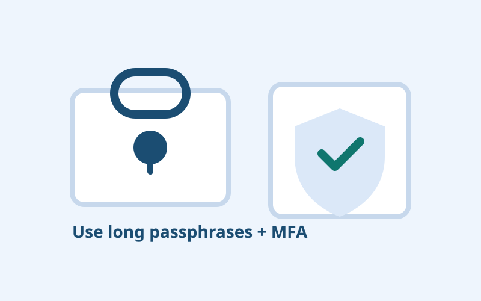

In plain words
This guide keeps the security basics simple. You do not need technical knowledge to use these habits.
Core idea
MFA means proving identity with more than one factor. If a password leaks, another factor can still block account takeover.
Why this matters
Most account incidents happen through predictable behaviors, not advanced attacks. Good basics create margin for mistakes and reduce recovery pain.
Common mistakes
- Using SMS as the only MFA where stronger options exist
- Approving push prompts without checking details
- Skipping backup methods and recovery planning
Practical checklist
- Turn on MFA for email, banking, and social accounts.
- Prefer app-based or hardware-key factors when available.
- Store backup codes in a secure offline location.
- Treat unexpected MFA prompts as potential attack signals.
Try this today
Enable MFA on one account right now and test your recovery path while you still have access.